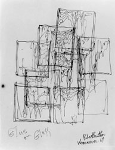

flowing and trickling
Ellsworth Kelly
Jackson Pollock
Automatic Drawing, 1950
Poured Black Shape, 1950
Morris Louis
Isis, 1954
Untitled, 1954
1954
Untitled, 1954
Tet, 1958
Yves Klein
Monochrome bleu sans titre (coulée)
(IKB 40), 1956
Monochrome Jaune
(M 8), 1957
Monochrome Noir
(M 17), 1957
Markus Prachensky
Peinture liquide. Red paint flowing down three large white panels.
Live performance, Theater am Fleischmarkt, Vienna, 1959.
Hermann Nitsch
Blutorgelbild, 1962
Brot und Wein, 1960
Schüttbild, 1963
Schüttbild, 1986
Sadamasa Motonaga
Untitled, 1961
Niki de St. Phalle
Tir à la Carabine, 1961
William Anastasi
One Gallon Industrial High Enamel, Poured (1966)
Dieter Roth
Motorradfahrer, 1969
Käserennen, 1970
Robert Smithson
Glue Pour, 1969

Glue on Glass, 1969
Asphalt Rundown, 1969
Asphalt on Cliff, 1969
Larry Poons
De Select, 1972
Untitled, 1974
Marywillow, 1979
Halfway Island
Untitled, 1974
Untitled, 1974
Andy Warhol
John Armleder
Ben Vautier
Piss Painting, 1978
Untitled, 1986
"Zufall ist da."
"Der Zufall wollte es so."
Pat Steir
Chinese Waterfall, 1988
Waterfall, 1988
After the Fall IV, 1991-2000
Red, White and Grey Waterfall,
1994
Peacock Waterfall,
2001
Blue River, 2005
Roxy Paine
Paint Dipper, 1997
Painting Manufacture Unit (PMU), 1999-2000
PMU No. 12, 2003
PMU No. 17, 2005
Holton Rower

Tall Paintings (Poured), 2010/2011
Untitled, 2011